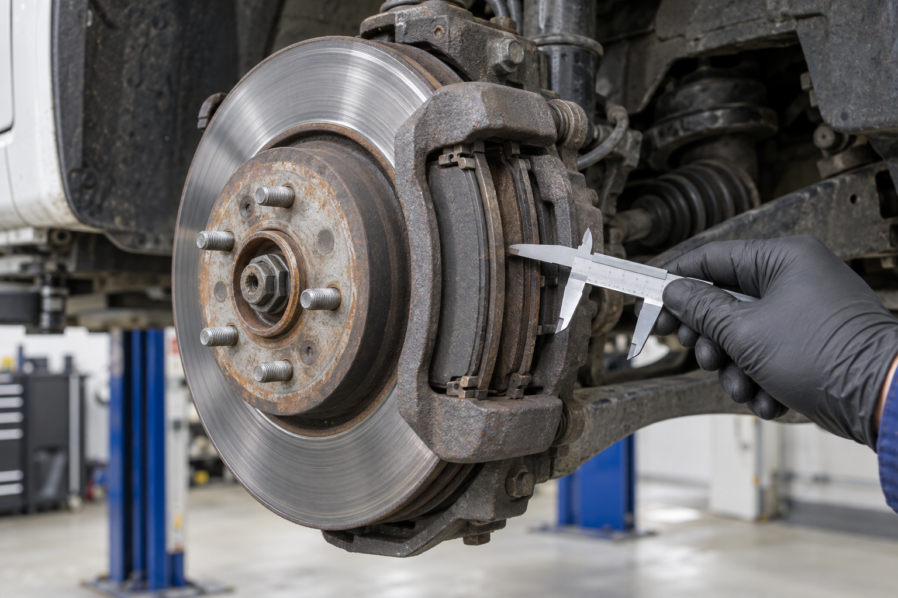
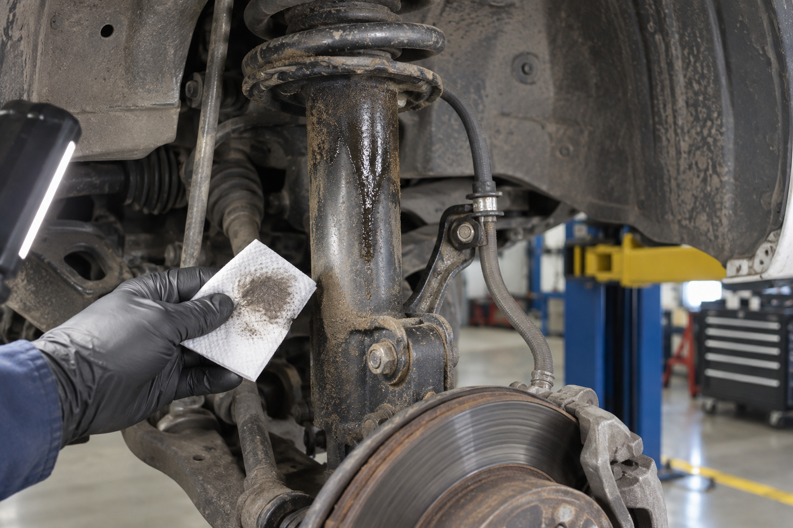

NM4 · Unidad 3 · Clase 6 · 4°B Mecánica Automotriz · 3 min
Escribir en el trabajo: el informe técnico
Transformaremos una orden de trabajo, fotografías y mediciones de frenos y suspensión en una decisión escrita sobre la aptitud de un vehículo.
Caso ficticio MA-FLM-DIA-V17 · imágenes originales generadas con IA.
¿Lo devolverías al servicio?
5 min
Decide primero
El conductor informa desvío al frenar. La pastilla interior mide 2,5 mm y la exterior 5,0 mm.
En el cuaderno: «Apto», «No apto» o «Falta información» y una razón basada en la evidencia.
Contar no es informar
5 min«Los frenos están gastados y el amortiguador malo».
«La pastilla interior delantera izquierda mide 2,5 mm; el manual del caso fija reemplazo a 3,0 mm».
La segunda versión permite comprobar el dato, aplicar un criterio y justificar si el vehículo puede circular.
Objetivo de la clase
3 minProducto: un informe compartido o individual, guardado y entregado en Estudia CEST.
¿Qué hace un informe técnico?
4 min1. Registra
Vehículo, síntoma, kilometraje, posición y medición.
2. Compara
Relaciona la evidencia con el manual y el procedimiento.
3. Recomienda
Propone reparar, comprobar y decidir la aptitud final.
Escribes para que alguien decida
4 minQuien escribe
El equipo técnico que recibe el síntoma, inspecciona y mide.
Quien recibe
La jefatura de flota que debe reparar, mantener fuera de servicio o autorizar el vehículo.
El informe no promete una causa que no se comprobó: distingue el dato, la interpretación y la decisión.
El caso: vehículo de flota V-17
5 minLa empresa necesita decidir si el vehículo puede volver a reparto. Ustedes recibirán una bitácora, tres fotografías, criterios del caso y un hallazgo resuelto como modelo.
Doce páginas, cuatro bloques
4 minIdentificación
Portada, vehículo y datos del documento.
Propósito
Resumen, síntoma, alcance y objetivos.
Evidencia
Mediciones, esquema, fotografías y orden.
Decisión
Hallazgos, aptitud, conclusión y firmas.
La ubicación también es evidencia
5 min
Cadena de evidencia
- Síntoma: lo informado por el conductor.
- Foto: ubica la condición.
- Medición: cuantifica el estado.
- Criterio: permite decidir aptitud y reparación.
Un hallazgo responde cinco preguntas
5 minCondición
¿Qué ocurre y dónde?
Criterio
¿Qué debería cumplirse?
Causa
¿Qué se comprobó realmente?
Efecto
¿Qué riesgo o falla produce?
Recomendación
¿Qué se hará y verificará?
De la nota rápida a la redacción técnica
4 minNo se culpó a la pinza sin desmontarla. Se informó la diferencia que sí quedó medida.
Ingresa y elige modalidad
2 minestudiacest.com/nm4 → Clase 6 → 4°B Mecánica Automotriz
Ingresa con tu RUT. Elige Individual o En pareja. En pareja, escribe el RUT del compañero: ambos verán el mismo borrador y harán una sola entrega.
Abrir el informe →Completa 20 campos obligatorios
38 minRevisión rápida antes de entregar
3 minEvidencia
¿Cada cifra corresponde a una posición y componente?
Criterio
¿Comparaste con el manual o procedimiento indicado?
Decisión
¿La conclusión dice si el vehículo está apto y por qué?
Entrega: cuando el sistema confirme, el informe quedará bloqueado y aparecerá como entregado al profesor.